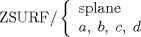

| 3.2. The ZSURF Definition | ||
|---|---|---|
 | Chapter 3. Geometric Statements in APT |  |
| 3.2. The ZSURF Definition | ||
|---|---|---|
| | Chapter 3. Geometric Statements in APT | |
The ZSURF definition supplies a means of defining an implicit Z coordinate for a point whenever it is required for use in a geometric definition or a motion command. The general form of this statement is:

When only the X and Y coordinates for a point have been specified in a part program statement, the APT processor projects the point on the ZSURF plane to calculate the implicit Z value. (if ZSURF is not specified, the XY plane is assumed.) For example:
ZSURF/ SPLANE SPOINT = POINT/ X, Y
The Z value is supplied by projecting the point (X, Y) in a direction parallel to the Z axis onto the plane SPLANE.
| |  | |
| Chapter 3. Geometric Statements in APT |  | 3.3. The Point (POINT) Definitions |